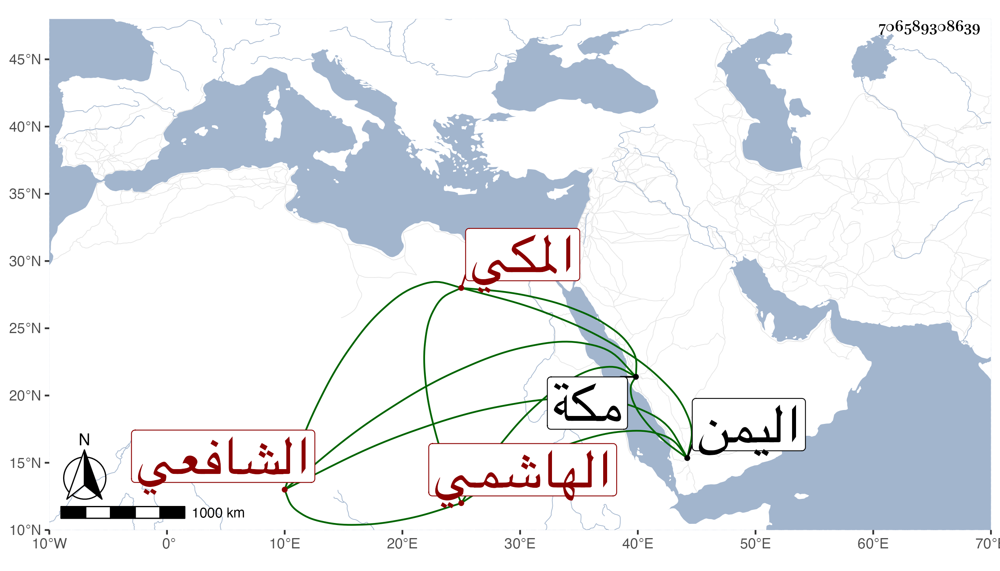

0902Sakhawi.DawLamic.ITO20230111-ara1.EIS1600.706589308639
Biography ID: 706589308639
635
مسعود بن هاشم بن علي بن مسعود بن غزوان بن حسين سعد الدين أبو محمد الهاشمي المكي الشافعي أخو علي والد أبي سعد محمد الماضيين . ولد قريبا من سنة خمس وستين وسبعمائة وسمع من الجمال الأميوطي والنشاوري والشهاب بن ظهيرة والمحب النويري وغيرهم ، قال التقي الفاسي : وأقبل على الاشتغال ولازم مجلس الجمال بن ظهيرة كثيرا وتنبه في الفقه وكان كثير الاستحضار له وللروضة وربما أفتى لفظا مع خير وديانة ومروءة ، وقال التقي بن فهد في معجمه أنه حدث سمع منه الفضلاء . مات في جمادى الأولى سنة تسع عشرة بمكة ودفن بالمعلاة وكان سافر إلى اليمن .
